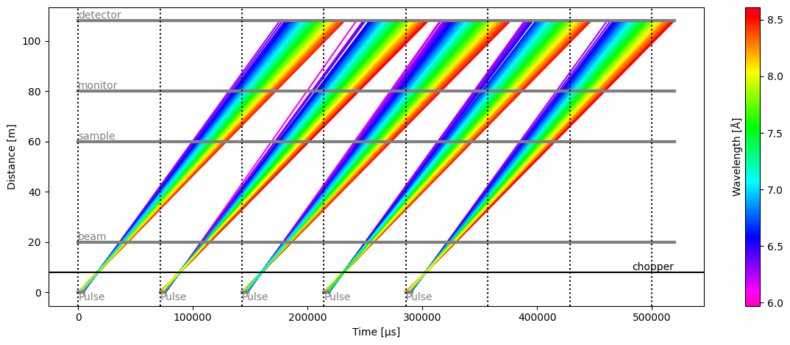
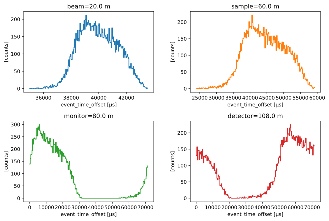
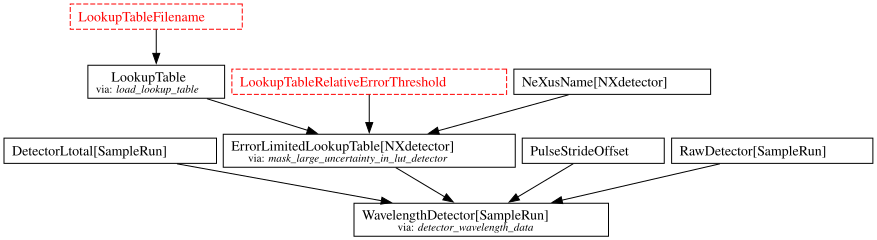
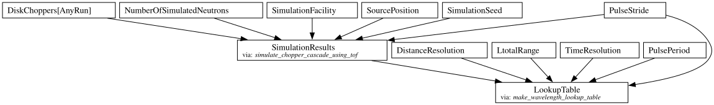
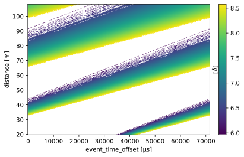
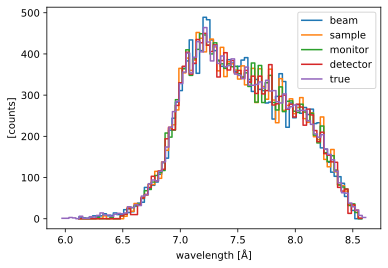
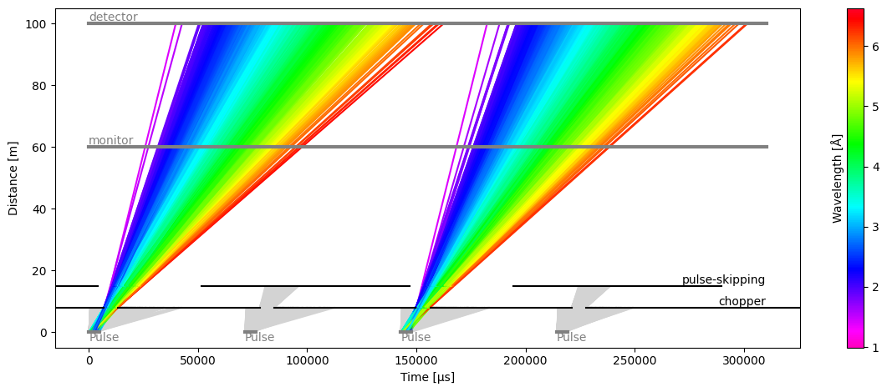
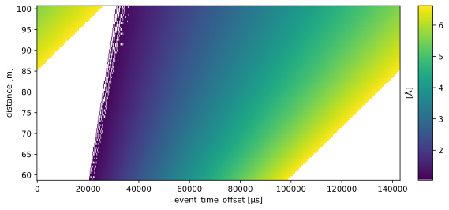
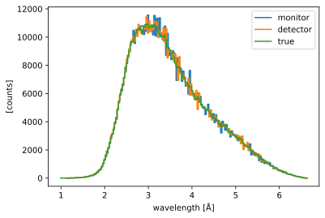

Frame Unwrapping#
Context#
At time-of-flight neutron sources recording event-mode, time-stamps of detected neutrons are written to files in an NXevent_data group. This contains two main time components, event_time_zero and event_time_offset. The sum of the two would typically yield the absolute detection time of the neutron. For computation of wavelengths or energies during data-reduction, a time-of-flight (directly convertible to a wavelength with a given flight path length) is required. In principle the
time-of-flight could be equivalent to event_time_offset, and the emission time of the neutron to event_time_zero. Since an actual computation of time-of-flight would require knowledge about chopper settings, detector positions, and whether the scattering of the sample is elastic or inelastic, this may however not be the case in practice. Instead, the data acquisition system may, e.g., record the time at which the proton pulse hits the target as event_time_zero, with
event_time_offset representing the offset since then.
We refer to the process of “unwrapping” these time stamps into an actual time-of-flight (or wavelength) as frame unwrapping, since event_time_offset “wraps around” with the period of the proton pulse and neutrons created by different proton pulses may be recorded with the same event_time_zero. The figures in the remainder of this document will clarify this.
[1]:
import plopp as pp
import scipp as sc
from scippneutron.chopper import DiskChopper
from ess.reduce.nexus.types import AnyRun, RawDetector, SampleRun, NeXusDetectorName
from ess.reduce.unwrap import *
import tof
Hz = sc.Unit("Hz")
deg = sc.Unit("deg")
meter = sc.Unit("m")
Default mode#
Often there is a 1:1 correspondence between source pulses and neutron pulses propagated to the sample and detectors.
In this first example:
We begin by creating a source of neutrons which mimics the ESS source.
We set up a single chopper with a single opening
We place 4 ‘monitors’ along the path of the neutrons (none of which absorb any neutrons)
[2]:
source = tof.Source(facility="ess", pulses=5)
chopper = tof.Chopper(
frequency=14.0 * Hz,
open=sc.array(dims=["cutout"], values=[0.0], unit="deg"),
close=sc.array(dims=["cutout"], values=[3.0], unit="deg"),
phase=85.0 * deg,
distance=8.0 * meter,
name="chopper",
)
detectors = [
tof.Detector(distance=20.0 * meter, name="beam"),
tof.Detector(distance=60.0 * meter, name="sample"),
tof.Detector(distance=80.0 * meter, name="monitor"),
tof.Detector(distance=108.0 * meter, name="detector"),
]
model = tof.Model(source=source, choppers=[chopper], detectors=detectors)
results = model.run()
pl = results.plot()
for i in range(2 * source.pulses):
pl.ax.axvline(
i * (1.0 / source.frequency).to(unit="us").value, color="k", ls="dotted"
)

In the figure above, the dotted vertical lines represent the event_time_zero of each pulse, i.e. the start of a new origin for event_time_offset recorded at the various detectors.
The span between two dotted lines is called a ‘frame’.
The figure gives a good representation of the situation at each detector:
beam monitor: all the arrival times at the detector are inside the same frame within which the neutrons were created.
sample: all the arrival times are offset by one frame
monitor: most of the neutrons arrive with an offset of two frames, but a small amount of neutrons (shortest wavelengths) only have a 1-frame offset
detector: most of the neutrons arrive with an offset of two frames, but a small amount of neutrons (longest wavelengths) have a 3-frame offset
We can further illustrate this by making histograms of the event_time_offset of the neutrons for each detector:
[3]:
subplots = pp.tiled(2, 2, figsize=(9, 6))
nxevent_data = results.to_nxevent_data()
for i, det in enumerate(detectors):
data = nxevent_data["detector_number", i]
subplots[i // 2, i % 2] = (
data.bins.concat()
.hist(event_time_offset=200)
.plot(title=f"{det.name}={det.distance:c}", color=f"C{i}")
)
subplots
[3]:

Computing neutron wavelengths#
We describe in this section the workflow that computes wavelengths, given event_time_zero and event_time_offset for neutron events, as well as the properties of the source pulse and the choppers in the beamline.
In short, we use a lookup table which can predict the wavelength of the neutrons, according to their event_time_offset.
The workflow can be visualized as follows:
[4]:
wf = GenericUnwrapWorkflow(run_types=[SampleRun], monitor_types=[])
wf[RawDetector[SampleRun]] = nxevent_data
wf[DetectorLtotal[SampleRun]] = nxevent_data.coords["Ltotal"]
wf[NeXusDetectorName] = "detector"
wf.visualize(WavelengthDetector[SampleRun])
[4]:

By default, the workflow tries to load a LookupTable from a file.
In this notebook, instead of using such a pre-made file, we will build our own lookup table from the chopper information and apply it to the workflow.
Create the lookup table#
The chopper information is used to construct a lookup table that provides an estimate of the neutron wavelength as a function of time-of-arrival.
The Tof package can be used to propagate a pulse of neutrons through the chopper system to the detectors, and predict the most likely neutron wavelength for a given time-of-arrival. More advanced programs such as McStas can of course also be used for even better results.
We typically have hundreds of thousands of pixels in an instrument, but it is actually not necessary to propagate the neutrons to 105 detectors.
Instead, we make a table that spans the entire range of distances of all the pixels, with a modest resolution, and use a linear interpolation for values that lie between the points in the table.
To create the table, we thus:
run a simulation where a pulse of neutrons passes through the choppers and reaches the sample (or any location after the last chopper)
propagate the neutrons from the sample to a range of distances that span the minimum and maximum pixel distance from the sample (assuming neutron wavelengths do not change)
bin the neutrons in both distance and time-of-arrival (yielding a 2D binned data array)
compute the (weighted) mean wavelength inside each bin to give our final lookup table
This is done using a dedicated workflow:
[5]:
lut_wf = LookupTableWorkflow()
lut_wf[LtotalRange] = detectors[0].distance, detectors[-1].distance
lut_wf[DiskChoppers[AnyRun]] = {
"chopper": DiskChopper(
frequency=-chopper.frequency,
beam_position=sc.scalar(0.0, unit="deg"),
phase=-chopper.phase,
axle_position=sc.vector(
value=[0, 0, chopper.distance.value], unit=chopper.distance.unit
),
slit_begin=chopper.open,
slit_end=chopper.close,
slit_height=sc.scalar(10.0, unit="cm"),
radius=sc.scalar(30.0, unit="cm"),
)
}
lut_wf[SourcePosition] = sc.vector([0, 0, 0], unit="m")
lut_wf.visualize(LookupTable)
[5]:

The table can be computed, and visualized as follows:
[6]:
table = lut_wf.compute(LookupTable)
table.plot()
[6]:

Computing wavelength from the lookup#
We now use the above table to perform a bilinear interpolation and compute the wavelength of every neutron. We set the newly computed lookup table as the LookupTable onto the workflow wf.
Looking at the workflow visualization of the GenericUnwrapWorkflow above, we also need to set a value for the LookupTableRelativeErrorThreshold parameter. This puts a cap on wavelength uncertainties: if there are regions in the table where neutrons with different wavelengths are overlapping, the uncertainty on the predicted wavelength for a given neutron time of arrival will be large. In some cases, it is desirable to throw away these neutrons by setting a low uncertainty threshold.
Here, we do not have that issue as the chopper in the beamline is ensuring that neutron rays are not overlapping, and we thus set the threshold to infinity.
Finally, we also compare our computed wavelengths to the true wavelengths which are known for the simulated neutrons.
[7]:
# Set the computed lookup table on the original workflow
wf[LookupTable] = table
# Set the uncertainty threshold for the neutrons at the detector to infinity
wf[LookupTableRelativeErrorThreshold] = {"detector": float("inf")}
# Compute neutron wavelengths
dw = sc.scalar(0.03, unit="angstrom")
wavs = wf.compute(WavelengthDetector[SampleRun])
wav_hist = wavs.hist(wavelength=dw)
# Split detectors into a dict for plotting
wavs = {det.name: wav_hist["detector_number", i] for i, det in enumerate(detectors)}
# Also compare to the ground truth
ground_truth = results["detector"].data.flatten(to="event")
ground_truth = ground_truth[~ground_truth.masks["blocked_by_others"]].hist(
wavelength=dw
)
wavs["true"] = ground_truth
pp.plot(wavs)
[7]:

We see that all detectors agree on the wavelength spectrum, which is also in very good agreement with the true neutron wavelengths.
Pulse-skipping mode#
In some beamline configurations, one wishes to study a wide range of wavelengths at a high flux. This usually means that the spread of arrival times will spill-over into the next pulse if the detector is placed far enough to yield a good wavelength resolution.
To avoid the next pulse polluting the data from the current pulse, it is common practice to use a pulse-skipping chopper which basically blocks all neutrons every other pulse. This could also be every 3 or 4 pulses for very long instruments.
The time-distance diagram may look something like:
[8]:
source = tof.Source(facility="ess", pulses=4)
choppers = [
tof.Chopper(
frequency=14.0 * Hz,
open=sc.array(dims=["cutout"], values=[0.0], unit="deg"),
close=sc.array(dims=["cutout"], values=[33.0], unit="deg"),
phase=35.0 * deg,
distance=8.0 * meter,
name="chopper",
),
tof.Chopper(
frequency=7.0 * Hz,
open=sc.array(dims=["cutout"], values=[0.0], unit="deg"),
close=sc.array(dims=["cutout"], values=[120.0], unit="deg"),
phase=10.0 * deg,
distance=15.0 * meter,
name="pulse-skipping",
),
]
detectors = [
tof.Detector(distance=60.0 * meter, name="monitor"),
tof.Detector(distance=100.0 * meter, name="detector"),
]
model = tof.Model(source=source, choppers=choppers, detectors=detectors)
results = model.run()
results.plot(blocked_rays=5000)
[8]:
Plot(ax=<Axes: xlabel='Time [μs]', ylabel='Distance [m]'>, fig=<Figure size 1200x480 with 2 Axes>)

Computing wavelengths#
To compute the neutron wavelengths in pulse skipping mode, we can use the same workflow as before.
The only difference is that we set the PulseStride to 2 to skip every other pulse.
[9]:
# Lookup table workflow
lut_wf = LookupTableWorkflow()
lut_wf[PulseStride] = 2
lut_wf[LtotalRange] = detectors[0].distance, detectors[-1].distance
lut_wf[DiskChoppers[AnyRun]] = {
ch.name: DiskChopper(
frequency=-ch.frequency,
beam_position=sc.scalar(0.0, unit="deg"),
phase=-ch.phase,
axle_position=sc.vector(
value=[0, 0, ch.distance.value], unit=chopper.distance.unit
),
slit_begin=ch.open,
slit_end=ch.close,
slit_height=sc.scalar(10.0, unit="cm"),
radius=sc.scalar(30.0, unit="cm"),
)
for ch in choppers
}
lut_wf[SourcePosition] = sc.vector([0, 0, 0], unit="m")
lut_wf[DistanceResolution] = sc.scalar(0.5, unit="m")
The lookup table now spans 2 pulse periods, between 0 and ~142 ms:
[10]:
table = lut_wf.compute(LookupTable)
table.plot(figsize=(9, 4))
[10]:

The wavelength profiles are then:
[11]:
# Reduction workflow
wf = GenericUnwrapWorkflow(run_types=[SampleRun], monitor_types=[])
nxevent_data = results.to_nxevent_data()
wf[RawDetector[SampleRun]] = nxevent_data
wf[DetectorLtotal[SampleRun]] = nxevent_data.coords["Ltotal"]
wf[NeXusDetectorName] = "detector"
wf[LookupTable] = table
wf[LookupTableRelativeErrorThreshold] = {"detector": float("inf")}
wavs = wf.compute(WavelengthDetector[SampleRun])
wav_hist = wavs.hist(wavelength=dw)
wavs = {det.name: wav_hist["detector_number", i] for i, det in enumerate(detectors)}
# Compare to ground truth
ground_truth = results["detector"].data.flatten(to="event")
ground_truth = ground_truth[~ground_truth.masks["blocked_by_others"]].hist(
wavelength=dw
)
wavs["true"] = ground_truth
pp.plot(wavs)
[11]:
